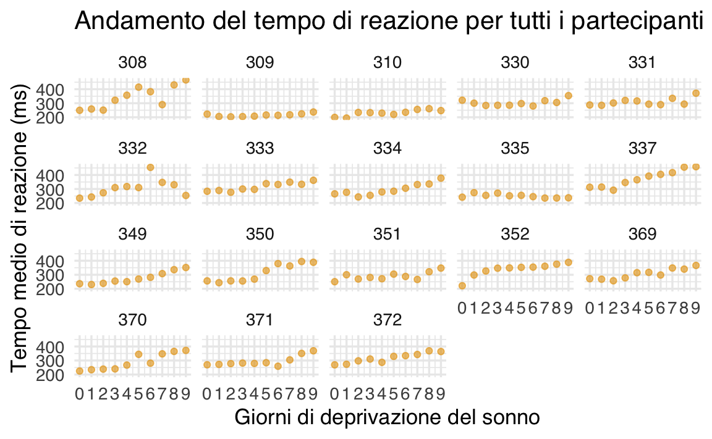
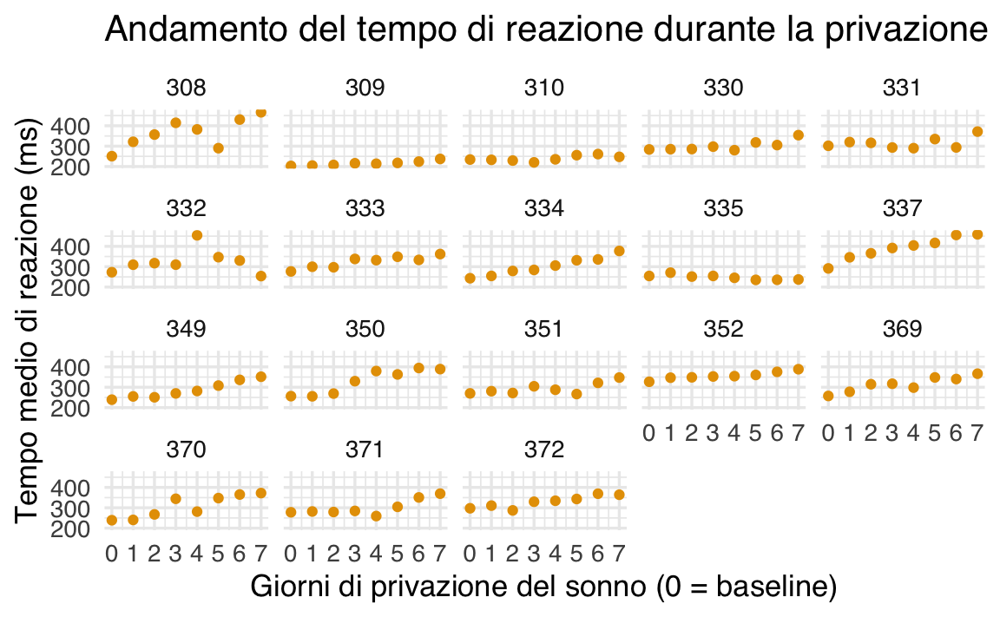
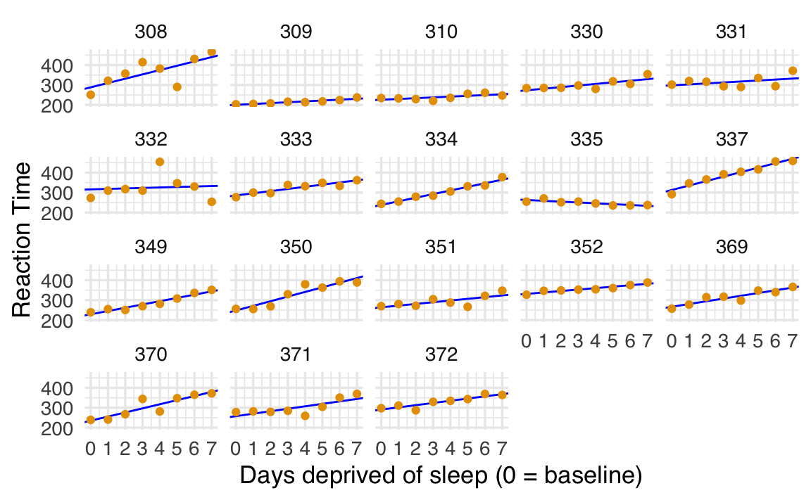

here::here("code", "_common.R") |>
source()
# Load packages
if (!requireNamespace("pacman")) install.packages("pacman")
pacman::p_load(car, lme4, lavaan, semPlot, repr, kableExtra)14 Modelli multilivello
In questo capitolo apprenderai come:
- implementare e confrontare i modelli di complete pooling, no pooling e partial pooling, comprendendone le differenze concettuali e applicative;
- interpretare l’output della funzione
lmer()e utilizzare le stime dei parametri per analisi e visualizzazioni dei risultati.
Prerequisiti
- Leggere il capitolo Reliability del testo di Petersen (2024).
Preparazione del Notebook
14.1 Introduzione
I modelli multilivello, anche denominati modelli gerarchici o a effetti misti, costituiscono un approccio statistico avanzato progettato per analizzare dati organizzati in strutture gerarchiche o nidificate. Tali modelli consentono di modellare simultaneamente variazioni a diversi livelli di aggregazione, come il livello individuale e quello di gruppo, migliorando la precisione dell’inferenza e la comprensione delle dinamiche sottostanti ai dati.
In psicologia, i modelli multilivello rivestono un ruolo fondamentale, poiché i dati spesso derivano da contesti complessi in cui fattori individuali e ambientali interagiscono. Per esempio, nell’analisi delle prestazioni cognitive o delle risposte emotive, questi modelli permettono di distinguere le variazioni attribuibili a caratteristiche individuali (ad es., abilità cognitiva, tratti di personalità) da quelle dovute a fattori ambientali (ad es., clima scolastico, dinamiche familiari).
Le principali applicazioni dei modelli multilivello includono:
- Analisi di dati longitudinali: Gestiscono la dipendenza seriale introdotta da misurazioni ripetute sugli stessi soggetti, migliorando l’accuratezza nell’estimare gli effetti temporali.
- Studio dell’impatto di fattori contestuali: Permettono di quantificare l’influenza dell’ambiente su variabili psicologiche, fornendo stime che isolano gli effetti specifici dei contesti.
- Rappresentazione della variabilità intra- e inter-individuale: Offrono una modellazione flessibile che cattura sia le differenze tra individui sia le fluttuazioni all’interno dello stesso individuo, riflettendo fedelmente la complessità dei processi psicologici.
14.2 Un Esempio Concreto: Analisi dei Dati di Deprivazione del Sonno
Questo capitolo illustra l’applicazione pratica dei modelli multilivello nell’analisi dei dati di uno studio sperimentale che ha investigato l’effetto della deprivazione del sonno sulle prestazioni psicomotorie. I dati analizzati provengono dalla ricerca di Belenky et al. (2003), che ha esaminato gli effetti cumulativi della restrizione del sonno.
14.2.1 Accesso ai Dati
I dati utilizzati sono inclusi nel dataset sleepstudy, disponibile nel pacchetto lme4 di R (Bates et al., 2014):
data(sleepstudy)Il dataset è costituito da 180 osservazioni e contiene tre variabili principali:
-
Reaction: Tempo medio di reazione (in millisecondi). -
Days: Numero di giorni consecutivi di deprivazione del sonno. -
Subject: Identificativo del partecipante.
14.2.2 Struttura del Dataset
Il dataset presenta una tipica struttura multilivello: dati longitudinali con misurazioni ripetute del tempo medio di reazione (variabile dipendente) raccolte dai medesimi partecipanti nell’arco di dieci giorni. Tale configurazione è comune in psicologia sperimentale, dove è frequente analizzare variazioni intra-individuali e inter-individuali.
I 18 partecipanti dello studio sono stati sottoposti a una restrizione del sonno di tre ore per notte. Ogni giorno, per dieci giorni consecutivi, hanno eseguito un “test di vigilanza psicomotoria” di dieci minuti. Durante il test, i partecipanti monitoravano uno schermo e premevano un pulsante il più rapidamente possibile alla comparsa di uno stimolo visivo. La variabile di interesse è il tempo medio di reazione (RT), utilizzato come indicatore delle prestazioni psicomotorie.
14.2.3 Analisi Esplorativa
14.2.3.1 Visualizzazione per un Singolo Partecipante
Per iniziare, si può esaminare l’andamento del tempo medio di reazione per un singolo partecipante. Ad esempio, consideriamo il soggetto identificato con 308:
just_308 <- sleepstudy |>
filter(Subject == "308")
ggplot(just_308, aes(x = Days, y = Reaction)) +
geom_point(size = 2.5) +
scale_x_continuous(breaks = 0:9) +
labs(title = "Andamento del tempo di reazione (Soggetto 308)",
x = "Giorni di deprivazione del sonno",
y = "Tempo medio di reazione (ms)"
)14.2.3.2 Visualizzazione per Tutti i Partecipanti
Per un’analisi più completa, è utile rappresentare i dati di tutti i 18 partecipanti in un’unica visualizzazione, evidenziando le differenze individuali nelle prestazioni psicomotorie durante il periodo di studio:
ggplot(sleepstudy, aes(x = Days, y = Reaction)) +
geom_point(alpha = 0.6) +
scale_x_continuous(breaks = 0:9) +
facet_wrap(~Subject) +
labs(title = "Andamento del tempo di reazione per tutti i partecipanti",
x = "Giorni di deprivazione del sonno",
y = "Tempo medio di reazione (ms)"
)
Queste visualizzazioni preliminari evidenziano sia le tendenze generali che le differenze individuali nel tempo di reazione in risposta alla deprivazione del sonno. Tali pattern saranno ulteriormente analizzati utilizzando modelli multilivello, che consentono di quantificare le variazioni intra-individuali e inter-individuali, isolando l’effetto cumulativo della deprivazione del sonno.
14.2.4 Descrizione del Disegno Sperimentale
Fase di Adattamento e Baseline: Lo studio è iniziato con tre giorni preliminari dedicati all’adattamento e all’addestramento (T1 e T2) seguiti dalla misurazione baseline (B). Durante questi giorni, i partecipanti hanno mantenuto un regime di sonno controllato, trascorrendo 8 ore a letto ogni notte (dalle 23:00 alle 07:00). Lo scopo di questa fase era garantire una condizione standardizzata e ridurre la variabilità individuale dovuta a precedenti abitudini di sonno.
Condizioni di Restrizione e Prolungamento del Sonno: A partire dal quarto giorno, i partecipanti sono stati assegnati a diverse condizioni sperimentali per un periodo di sette giorni consecutivi (E1-E7). La durata del tempo trascorso a letto (Time in Bed, TIB) è stata manipolata e variava da un minimo di 3 ore a un massimo di 9 ore, al fine di indurre stati progressivi di deprivazione o recupero del sonno.
Nella codifica temporale dello studio: - I giorni 0 e 1 rappresentano la fase di adattamento e addestramento. - Il giorno 2 corrisponde alla misurazione baseline, che riflette le prestazioni psicomotorie in condizioni di sonno ottimale. - I giorni 3-9 rappresentano il periodo sperimentale, durante il quale è stata applicata la manipolazione del sonno.
Per l’analisi, è fondamentale considerare il giorno di baseline (2) come punto di riferimento per valutare gli effetti della manipolazione del sonno sulle prestazioni. I giorni di adattamento e addestramento (0 e 1) devono essere esclusi dall’analisi, poiché le variazioni osservate in questa fase sono attribuibili all’acclimatazione ai protocolli dello studio e non alle condizioni sperimentali di sonno. L’esclusione di questi giorni garantisce che le stime dell’effetto siano focalizzate esclusivamente sull’impatto della restrizione o del prolungamento del sonno.
14.2.5 Preparazione dei Dati
La preparazione dei dati è un passaggio essenziale per garantire che l’analisi rifletta accuratamente gli effetti della manipolazione sperimentale. I seguenti passaggi sono stati eseguiti:
Rimozione delle Osservazioni Iniziali
Le osservazioni relative ai giorni 0 e 1, corrispondenti alla fase di adattamento e addestramento, sono state escluse dal dataset. Questo assicura che l’analisi si concentri esclusivamente sul periodo di interesse, ovvero il baseline (giorno 2) e i successivi giorni di manipolazione del sonno.Creazione di una Variabile Ricodificata
È stata generata una nuova variabile,days_deprived, per rappresentare il numero di giorni di privazione del sonno a partire dal giorno baseline (giorno 2). La ricodifica inizia con 0 per il giorno baseline, 1 per il primo giorno di privazione (giorno 3), e così via. Questa variabile facilita la lettura e l’interpretazione dei risultati nel contesto del protocollo sperimentale.Salvataggio del Dataset Modificato
Il dataset modificato è stato denominatosleep2e ora include solo le osservazioni rilevanti per l’analisi, con una chiara distinzione tra il baseline e i giorni di privazione del sonno.
Ecco il codice per implementare questi passaggi:
# Filtraggio e creazione della nuova variabile
sleep2 <- sleepstudy |>
filter(Days >= 2L) |> # Escludiamo i giorni 0 e 1
mutate(days_deprived = Days - 2L) # Ricodifichiamo la variabile Days-
Verifica della Ricodifica
La correttezza della ricodifica è stata verificata calcolando il numero di osservazioni per ciascun valore didays_deprivede confrontandolo con i valori originali della variabileDays:
sleep2 |>
count(days_deprived, Days)
#> days_deprived Days n
#> 1 0 2 18
#> 2 1 3 18
#> 3 2 4 18
#> 4 3 5 18
#> 5 4 6 18
#> 6 5 7 18
#> 7 6 8 18
#> 8 7 9 18-
Visualizzazione dei Dati
Per esplorare le tendenze individuali nel tempo di reazione in funzione dei giorni di privazione del sonno, è stato creato un grafico a dispersione con le seguenti caratteristiche:- L’asse x rappresenta i giorni di privazione del sonno, con 0 corrispondente al baseline.
- L’asse y rappresenta il tempo medio di reazione (
Reaction). - Ogni partecipante è visualizzato separatamente tramite il wrapping dei facet.
ggplot(sleep2, aes(x = days_deprived, y = Reaction)) +
geom_point() +
scale_x_continuous(breaks = 0:7) +
facet_wrap(~Subject) +
labs(
y = "Tempo medio di reazione (ms)",
x = "Giorni di privazione del sonno (0 = baseline)",
title = "Andamento del tempo di reazione durante la privazione del sonno"
)
Questa preparazione consente un’analisi più mirata, isolando gli effetti della privazione del sonno e semplificando l’interpretazione delle dinamiche temporali.
14.3 Relazione tra Tempo di Reazione e Privazione del Sonno
L’analisi dei dati relativi alla privazione del sonno rivela che, con una singola eccezione (il soggetto 335), il tempo medio di reazione tende ad aumentare progressivamente con ogni giorno di privazione aggiuntivo. Questo trend suggerisce che un modello di regressione lineare potrebbe essere utile per descrivere le prestazioni di ciascun partecipante.
La regressione lineare è definita dalla seguente equazione:
\[ E(Y) = \beta_0 + \beta_1 X, \]
dove:
- \(Y\) rappresenta la variabile dipendente (il tempo di reazione medio),
- \(\beta_0\) è l’intercetta, ovvero il tempo di reazione stimato al giorno iniziale (baseline, senza privazione del sonno),
- \(\beta_1\) è il coefficiente di pendenza, che rappresenta la variazione stimata nel tempo di reazione per ogni giorno di privazione aggiuntivo,
- \(X\) indica il numero di giorni di privazione del sonno.
I parametri \(\beta_0\) e \(\beta_1\) vengono stimati dai dati, e la loro interpretazione fornisce informazioni chiave sulle dinamiche delle prestazioni psicomotorie.
14.4 Scelta del Modello di Regressione
Un aspetto cruciale nell’analisi è decidere quale struttura modellistica adottare per descrivere i dati. Si devono considerare le seguenti opzioni:
Complete Pooling
Questo approccio utilizza un unico modello di regressione lineare per tutti i partecipanti, assumendo che la relazione tra privazione del sonno e tempo di reazione sia identica per tutti. In pratica, si stima una singola intercetta (\(\beta_0\)) e una singola pendenza (\(\beta_1\)) comuni a tutti i soggetti. Sebbene semplice, questo metodo ignora completamente le differenze individuali.No Pooling
Qui, si stima un modello di regressione lineare separato per ciascun partecipante, consentendo a ogni soggetto di avere una propria intercetta e una propria pendenza. Questo approccio riconosce pienamente le variazioni individuali, ma potrebbe risultare eccessivamente complesso e sensibile al rumore nei dati, specialmente con pochi punti di osservazione per soggetto.Partial Pooling
Questo approccio intermedio, spesso implementato attraverso modelli multilivello, bilancia i due estremi sopra descritti. Si assume una relazione media condivisa tra i soggetti (ad esempio, una pendenza media), ma si consente una variazione individuale attorno a questa media. Il partial pooling sfrutta le informazioni condivise tra i partecipanti, migliorando la robustezza delle stime, specialmente in presenza di pochi dati per soggetto.
14.5 Complete pooling
L’approccio di “complete pooling” in analisi statistica implica l’utilizzo di un modello che calcola un’unica intercetta e una sola pendenza per l’intero dataset. Questo metodo si basa sull’ipotesi che tutti i soggetti nel dataset condividano le stesse caratteristiche di base riguardo alla relazione tra la variabile dipendente e indipendente.
Questo approccio non tiene conto delle possibili differenze individuali nelle intercette o nelle pendenze tra i diversi soggetti. Ad esempio, ignorara come ciascun soggetto reagisce in modo diverso alla privazione del sonno.
Dall’analisi preliminare dei dati, abbiamo notato che l’approccio di complete pooling potrebbe non essere adatto per il nostro studio. La visualizzazione dei dati suggerisce che ogni partecipante potrebbe avere una propria relazione unica tra il tempo di reazione e i giorni di privazione del sonno, indicando la necessità di valori individuali per le intercette e le pendenze.
14.5.1 Modello di Regressione Lineare in Complete Pooling
Il modello generale lineare (GLM) per l’approccio di complete pooling è formulato come segue:
\[ Y_{sd} = \beta_0 + \beta_1 X_{sd} + e_{sd}, \]
dove:
- \(Y_{sd}\) rappresenta il tempo di reazione medio del soggetto \(s\) nel giorno \(d\).
-
\(X_{sd}\) è il numero di giorni di privazione del sonno (variabile
days_deprived), che varia da 0 a 7. - \(e_{sd}\) è il termine di errore, che rappresenta le fluttuazioni casuali non spiegate dal modello.
Per adattare questo modello in R, si utilizza la funzione lm():
cp_model <- lm(Reaction ~ days_deprived, sleep2)
summary(cp_model)
#>
#> Call:
#> lm(formula = Reaction ~ days_deprived, data = sleep2)
#>
#> Residuals:
#> Min 1Q Median 3Q Max
#> -112.28 -26.73 2.14 27.73 140.45
#>
#> Coefficients:
#> Estimate Std. Error t value Pr(>|t|)
#> (Intercept) 267.97 7.74 34.63 < 2e-16
#> days_deprived 11.44 1.85 6.18 6.3e-09
#>
#> Residual standard error: 50.9 on 142 degrees of freedom
#> Multiple R-squared: 0.212, Adjusted R-squared: 0.207
#> F-statistic: 38.2 on 1 and 142 DF, p-value: 6.32e-09Il modello di regressione che abbiamo considerato offre una stima del tempo di risposta medio per i soggetti allo studio al Giorno 0 (prima della privazione del sonno) e la variazione media del tempo di risposta per ogni giorno aggiuntivo di privazione. Secondo questo modello, il tempo di risposta medio iniziale è stimato essere di circa 268 millisecondi, con un incremento medio di circa 11 millisecondi per ogni giorno successivo di privazione del sonno.
È importante notare, tuttavia, che questo modello potrebbe avere delle limitazioni nella sua applicabilità:
- Assunzione di Indipendenza: Il modello assume che tutte le osservazioni siano indipendenti. Questa assunzione potrebbe non essere valida nel nostro studio, dato che le osservazioni provengono da misurazioni ripetute sugli stessi soggetti.
- Errori Standard dei Coefficienti: La presunta indipendenza delle osservazioni implica che gli errori standard dei coefficienti di regressione potrebbero non essere completamente affidabili.
14.5.2 Visualizzazione
Per visualizzare meglio questi risultati, possiamo aggiungere le previsioni del modello al grafico che abbiamo già creato. Utilizziamo la funzione geom_abline() di R per tracciare la linea di regressione stimata direttamente sul grafico esistente:
-
Utilizzo di
geom_abline(): Questa funzione ci permette di aggiungere una linea di regressione al grafico, specificando l’intercetta e la pendenza. -
Coefficienti del Modello: Utilizziamo
coef(cp_model)per ottenere i coefficienti di regressione (intercetta e pendenza) dal nostro modello. Questa funzione restituisce un vettore con due elementi corrispondenti all’intercetta e alla pendenza, che possono essere poi utilizzati per definire la linea nel grafico.
ggplot(sleep2, aes(x = days_deprived, y = Reaction)) +
geom_abline(
intercept = coef(cp_model)[1],
slope = coef(cp_model)[2],
color = "blue"
) +
geom_point() +
scale_x_continuous(breaks = 0:7) +
facet_wrap(~Subject) +
labs(y = "Reaction Time", x = "Days deprived of sleep (0 = baseline)")
Dall’analisi effettuata, emerge che il modello attuale non si adatta in modo ottimale ai dati raccolti. Questa situazione indica la necessità di esplorare un approccio diverso per modellare in modo più accurato le relazioni presenti nei dati.
14.6 Approccio di No Pooling
In alternativa al modello di “complete pooling”, consideriamo l’approccio di “no pooling”. Questo approccio si basa sull’idea di adattare modelli di regressione separati per ogni partecipante, trattando ogni individuo come un’entità distinta.
14.6.1 Caratteristiche del No Pooling
- Indipendenza delle Stime: In questo approccio, ogni partecipante ha il proprio set di stime per l’intercetta e la pendenza. Le stime relative a un partecipante non sono influenzate dalle stime degli altri.
- Stime Individualizzate: Si stima separatamente una coppia di intercetta/pendenza per ciascuno dei 18 partecipanti, riconoscendo la possibilità di variazioni significative nelle risposte individuali.
14.6.2 Implementazione del Modello di No Pooling
Esistono due modi principali per implementare questo approccio:
- Regressioni Separate per Ogni Partecipante: Eseguire una serie di regressioni lineari individuali, una per ogni soggetto.
-
Modello di Regressione Unificato con Effetti Principali e Interazione: Utilizzare un unico modello di regressione che includa sia gli effetti principali sia l’interazione tra le variabili
Subject(soggetto) eDay(giorno). Questo metodo permette di includere tutte le stime in un unico modello.
Per il secondo approccio, è necessario considerare le seguenti fasi:
-
Creazione di Variabili Dummy per il Fattore
Subject: PoichéSubjectha 18 livelli, saranno necessarie 17 variabili dummy per rappresentare questi livelli. In R, questo può essere fatto automaticamente definendoSubjectcome un fattore. -
Includere
Subjectcome Fattore nel Modello: AggiungereSubject, definito come un fattore, come predittore nel modello. L’inclusione dell’interazione traSubjectedays_deprivedpermette variazioni nelle intercette e nelle pendenze tra i soggetti.
Prima di procedere, è importante assicurarsi che Subject sia definito correttamente come un fattore. Questo può essere verificato utilizzando la funzione summary() in R, che fornisce una sintesi delle caratteristiche della variabile, compreso se è trattata come un fattore.
sleep2 |>
summary()
#> Reaction Days Subject days_deprived
#> Min. :203 Min. :2.00 308 : 8 Min. :0.00
#> 1st Qu.:265 1st Qu.:3.75 309 : 8 1st Qu.:1.75
#> Median :303 Median :5.50 310 : 8 Median :3.50
#> Mean :308 Mean :5.50 330 : 8 Mean :3.50
#> 3rd Qu.:348 3rd Qu.:7.25 331 : 8 3rd Qu.:5.25
#> Max. :466 Max. :9.00 332 : 8 Max. :7.00
#> (Other):96La funzione pull() viene utilizzata per estrarre una specifica colonna da un data frame. Con le seguenti istruzioni verifichiamo se la colonna Subject è codificata come factor.
sleep2 |>
pull(Subject) |>
is.factor()
#> [1] TRUEAdattiamo il modello di regressione ai dati. Si noti che la sintassi seguente può essere semplificata utilizzando Reaction ~ days_deprived * Subject.
np_model <- lm(Reaction ~ days_deprived + Subject + days_deprived:Subject,
data = sleep2
)
summary(np_model)
#>
#> Call:
#> lm(formula = Reaction ~ days_deprived + Subject + days_deprived:Subject,
#> data = sleep2)
#>
#> Residuals:
#> Min 1Q Median 3Q Max
#> -106.52 -8.54 1.14 8.89 128.55
#>
#> Coefficients:
#> Estimate Std. Error t value Pr(>|t|)
#> (Intercept) 288.217 16.477 17.49 < 2e-16
#> days_deprived 21.690 3.939 5.51 2.5e-07
#> Subject309 -87.926 23.302 -3.77 0.00026
#> Subject310 -62.286 23.302 -2.67 0.00869
#> Subject330 -14.953 23.302 -0.64 0.52242
#> Subject331 9.966 23.302 0.43 0.66974
#> Subject332 27.816 23.302 1.19 0.23522
#> Subject333 -2.758 23.302 -0.12 0.90600
#> Subject334 -50.205 23.302 -2.15 0.03342
#> Subject335 -25.343 23.302 -1.09 0.27921
#> Subject337 24.614 23.302 1.06 0.29319
#> Subject349 -59.218 23.302 -2.54 0.01246
#> Subject350 -40.202 23.302 -1.73 0.08734
#> Subject351 -24.247 23.302 -1.04 0.30042
#> Subject352 43.065 23.302 1.85 0.06732
#> Subject369 -21.504 23.302 -0.92 0.35815
#> Subject370 -53.307 23.302 -2.29 0.02411
#> Subject371 -30.490 23.302 -1.31 0.19350
#> Subject372 2.477 23.302 0.11 0.91554
#> days_deprived:Subject309 -17.333 5.570 -3.11 0.00238
#> days_deprived:Subject310 -17.792 5.570 -3.19 0.00184
#> days_deprived:Subject330 -13.685 5.570 -2.46 0.01561
#> days_deprived:Subject331 -16.823 5.570 -3.02 0.00315
#> days_deprived:Subject332 -19.295 5.570 -3.46 0.00076
#> days_deprived:Subject333 -10.815 5.570 -1.94 0.05480
#> days_deprived:Subject334 -3.575 5.570 -0.64 0.52242
#> days_deprived:Subject335 -25.899 5.570 -4.65 9.5e-06
#> days_deprived:Subject337 0.752 5.570 0.13 0.89289
#> days_deprived:Subject349 -5.264 5.570 -0.95 0.34673
#> days_deprived:Subject350 1.601 5.570 0.29 0.77438
#> days_deprived:Subject351 -13.168 5.570 -2.36 0.01987
#> days_deprived:Subject352 -14.402 5.570 -2.59 0.01106
#> days_deprived:Subject369 -7.895 5.570 -1.42 0.15927
#> days_deprived:Subject370 -1.049 5.570 -0.19 0.85091
#> days_deprived:Subject371 -9.344 5.570 -1.68 0.09633
#> days_deprived:Subject372 -10.604 5.570 -1.90 0.05961
#>
#> Residual standard error: 25.5 on 108 degrees of freedom
#> Multiple R-squared: 0.849, Adjusted R-squared: 0.8
#> F-statistic: 17.4 on 35 and 108 DF, p-value: <2e-16Per chiarire, il soggetto di riferimento è il 308; in R, la modalità predefinita è quella di ordinare i livelli del fattore in ordine alfabetico e di scegliere il primo come soggetto di riferimento. Questo significa che l’intercetta e la pendenza per il soggetto 308 sono rappresentate rispettivamente da (Intercept) e days_deprived, poiché tutte le altre 17 variabili dummy saranno nulle per il soggetto 308.
Tutti i coefficienti di regressione degli altri soggetti sono rappresentati come scostamenti da questo soggetto di riferimento. Se desideriamo calcolare l’intercetta e la pendenza per un dato soggetto, dobbiamo semplicemente sommare gli scostamenti corrispondenti. Pertanto, abbiamo:
Intercetta per 308: 288.217
Pendenza per 308: 21.69
Intercetta per 335: (Intercept) + Subject335 = 288.217 + -25.343 = 262.874
Pendenza per 335: days_deprived + days_deprived:Subject335 = 21.69 + -25.899 = -4.209
E così via.
Nel modello “no pooling”, non viene stimata un’intercetta e una pendenza complessive per l’intera popolazione; in questo caso, (Intercept) e days_deprived sono stime dell’intercetta e della pendenza per il soggetto 308, che è stato scelto (arbitrariamente) come soggetto di riferimento. Per ottenere stime per l’intera popolazione, è possibile procedere con una seconda fase dell’analisi statistica in cui calcoliamo le medie delle intercette e delle pendenze individuali.
coef(np_model) |> as.data.frame()
#> coef(np_model)
#> (Intercept) 288.217
#> days_deprived 21.690
#> Subject309 -87.926
#> Subject310 -62.286
#> Subject330 -14.953
#> Subject331 9.966
#> Subject332 27.816
#> Subject333 -2.758
#> Subject334 -50.205
#> Subject335 -25.343
#> Subject337 24.614
#> Subject349 -59.218
#> Subject350 -40.202
#> Subject351 -24.247
#> Subject352 43.065
#> Subject369 -21.504
#> Subject370 -53.307
#> Subject371 -30.490
#> Subject372 2.477
#> days_deprived:Subject309 -17.333
#> days_deprived:Subject310 -17.792
#> days_deprived:Subject330 -13.685
#> days_deprived:Subject331 -16.823
#> days_deprived:Subject332 -19.295
#> days_deprived:Subject333 -10.815
#> days_deprived:Subject334 -3.575
#> days_deprived:Subject335 -25.899
#> days_deprived:Subject337 0.752
#> days_deprived:Subject349 -5.264
#> days_deprived:Subject350 1.601
#> days_deprived:Subject351 -13.168
#> days_deprived:Subject352 -14.402
#> days_deprived:Subject369 -7.895
#> days_deprived:Subject370 -1.049
#> days_deprived:Subject371 -9.344
#> days_deprived:Subject372 -10.604Calcoliamo le intercette individuali:
Calcliamo le pendenze individuali:
Creiamo un DataFrame con le colonne Subject, intercept e slope:
# make a tibble with the data extracted above
np_coef <- tibble(
Subject = ids,
intercept = all_intercepts,
slope = all_slopes
)
print(np_coef)
#> # A tibble: 18 × 3
#> Subject intercept slope
#> <fct> <dbl> <dbl>
#> 1 308 288. 21.7
#> 2 309 200. 4.36
#> 3 310 226. 3.90
#> 4 330 273. 8.01
#> 5 331 298. 4.87
#> 6 332 316. 2.40
#> # ℹ 12 more rowsEsaminiamo l’adattamento di questo modello ai dati.
ggplot(sleep2, aes(x = days_deprived, y = Reaction)) +
geom_abline(
data = np_coef,
mapping = aes(
intercept = intercept,
slope = slope
),
color = "blue"
) +
geom_point() +
scale_x_continuous(breaks = 0:7) +
facet_wrap(~Subject) +
labs(y = "Reaction Time", x = "Days deprived of sleep (0 = baseline)")
Questa situazione è notevolmente migliorata rispetto al modello di pooling completo. Se desideriamo testare l’ipotesi nulla secondo cui la pendenza della retta di regressione è uguale a zero, possiamo farlo eseguendo un test \(t\) di Student sul campione di pendenze individuali.
np_coef |>
pull(slope) |>
t.test()
#>
#> One Sample t-test
#>
#> data: pull(np_coef, slope)
#> t = 6, df = 17, p-value = 1e-05
#> alternative hypothesis: true mean is not equal to 0
#> 95 percent confidence interval:
#> 7.54 15.33
#> sample estimates:
#> mean of x
#> 11.4Questo test suggerisce che la pendenza media di 11.435 è diversa da zero, t(17) = 6.20 p < .001.
14.7 Partial Pooling
Nell’analisi dei dati psicologici, la scelta del metodo di pooling rappresenta una decisione cruciale per bilanciare la variabilità individuale con la necessità di sfruttare le informazioni aggregate. Da un lato, l’approccio di complete pooling tratta tutti i dati come se appartenessero a un unico gruppo omogeneo, ignorando completamente le differenze tra individui. Dall’altro lato, l’approccio di no pooling analizza i dati di ciascun partecipante separatamente, senza beneficiare delle informazioni condivise tra i soggetti. Entrambi questi estremi presentano limiti significativi: il complete pooling può occultare variazioni individuali rilevanti, mentre il no pooling rischia di produrre stime instabili e meno robuste, soprattutto in presenza di pochi dati per soggetto.
14.7.1 Il Vantaggio del Partial Pooling
Il partial pooling, implementato tramite modelli lineari a effetti misti, rappresenta un approccio intermedio che supera queste limitazioni. Questo metodo sfrutta le informazioni condivise tra i partecipanti per migliorare le stime a livello individuale, mantenendo al contempo la capacità di catturare variazioni specifiche. In pratica, il modello:
- Condivide informazioni tra soggetti: Le stime individuali sono influenzate dalle tendenze generali osservate nel gruppo, evitando così di basarsi esclusivamente sui dati limitati di ciascun partecipante.
- Permette variazioni individuali: Ogni soggetto può avere una propria intercetta e pendenza che si discostano dalla media di gruppo, riflettendo le differenze individuali.
Questo equilibrio consente di ottenere stime che sono sia robuste sia rappresentative, riducendo il rischio di sovradattamento (overfitting) e migliorando la generalizzabilità dei risultati.
14.7.2 Implementazione dei Modelli a Effetti Misti
- Trattare i Soggetti come Fattori Casuali: Nel partial pooling, i soggetti vengono considerati come un fattore casuale anziché fisso. Ciò implica che i livelli del fattore (i soggetti nel nostro caso) sono visti come un campione casuale da una popolazione più ampia.
- Modello Lineare a Effetti Misti: Questo tipo di modello statistico consente di includere i fattori casuali nell’analisi. In un modello misto, le stime per ogni soggetto sono “informate” o influenzate dalle informazioni aggregate degli altri soggetti.
- Shrinkage: Il fenomeno dello shrinkage (restringimento) indica che le stime per ciascun soggetto vengono regolate o “spostate” verso le stime medie della popolazione, permettendo una valutazione più equilibrata e meno influenzata da variazioni estreme o casuali.
14.7.3 Articolazione e Applicazione del Modello Multilivello
Il modello multilivello descritto cattura le relazioni tra variabili misurate a più livelli, integrando dinamicamente la variabilità individuale e di gruppo. La struttura a due livelli consente di modellare sia le differenze tra soggetti che le relazioni all’interno di ciascun soggetto.
14.7.4 Livello 1: Relazione Individuale
Al livello individuale, il modello esprime una relazione lineare tra la variabile di risposta \(Y_{sd}\) (tempo di reazione) e il predittore \(X_{sd}\) (giorni di privazione del sonno):
\[ Y_{sd} = \beta_{0s} + \beta_{1s} X_{sd} + e_{sd}, \]
dove:
- \(Y_{sd}\): Tempo di reazione del soggetto \(s\) al giorno \(d\),
- \(\beta_{0s}\): Intercetta specifica del soggetto \(s\),
- \(\beta_{1s}\): Pendenza specifica del soggetto \(s\),
- \(e_{sd} \sim N(0, \sigma^2)\): Errore residuo per il soggetto \(s\) al giorno \(d\), distribuito normalmente con varianza \(\sigma^2\).
Le intercette (\(\beta_{0s}\)) e le pendenze (\(\beta_{1s}\)) variano tra i soggetti e sono determinate al Livello 2.
14.7.5 Livello 2: Variabilità Tra Soggetti
Al livello superiore, il modello specifica come le intercette e le pendenze variano tra i soggetti:
\[ \beta_{0s} = \gamma_{0} + S_{0s}, \] \[ \beta_{1s} = \gamma_{1} + S_{1s}, \]
dove:
- \(\gamma_0\): Intercetta media della popolazione,
- \(\gamma_1\): Pendenza media della popolazione,
- \(S_{0s} \sim N(0, \tau_{00}^2)\): Effetto casuale sull’intercetta per il soggetto \(s\),
- \(S_{1s} \sim N(0, \tau_{11}^2)\): Effetto casuale sulla pendenza per il soggetto \(s\),
- \(\langle S_{0s}, S_{1s} \rangle\): Effetti casuali correlati con covarianza \(\rho \tau_{00} \tau_{11}\).
La matrice di varianza-covarianza degli effetti casuali è data da:
\[ \Sigma = \begin{pmatrix} \tau_{00}^2 & \rho \tau_{00} \tau_{11} \\ \rho \tau_{00} \tau_{11} & \tau_{11}^2 \end{pmatrix}, \]
dove \(\tau_{00}^2\) e \(\tau_{11}^2\) rappresentano rispettivamente la varianza delle intercette e delle pendenze, e \(\rho\) descrive la correlazione tra questi effetti.
14.7.6 Modello Completo
Combinando i due livelli, il modello multilivello può essere espresso come:
\[ Y_{sd} = \gamma_0 + S_{0s} + (\gamma_1 + S_{1s}) X_{sd} + e_{sd}, \]
dove:
- \(\gamma_0\) e \(\gamma_1\): Effetti fissi (intercetta e pendenza medie della popolazione),
- \(S_{0s}\) e \(S_{1s}\): Effetti casuali che catturano variazioni individuali,
- \(e_{sd}\): Errore residuo specifico per ciascuna osservazione.
14.7.7 Interpretazione degli Effetti Fissi e Casuali
- Effetti Fissi (\(\gamma_0\), \(\gamma_1\)): Rappresentano la tendenza generale della popolazione, fornendo stime medie valide per tutti i soggetti.
- Effetti Casuali (\(S_{0s}\), \(S_{1s}\)): Catturano la variabilità tra i soggetti, modellando le deviazioni rispetto agli effetti fissi.
14.7.8 Importanza della Matrice di Varianza-Covarianza
La matrice di varianza-covarianza consente di:
- Quantificare la variabilità tra i soggetti: Le varianze \(\tau_{00}^2\) e \(\tau_{11}^2\) indicano l’eterogeneità delle intercette e delle pendenze rispettivamente.
- Esaminare le relazioni tra intercette e pendenze: La covarianza \(\rho \tau_{00} \tau_{11}\) fornisce informazioni sulle correlazioni tra i due parametri. Ad esempio, una correlazione positiva potrebbe indicare che soggetti con tempi di reazione iniziali più elevati (intercetta maggiore) tendono a mostrare aumenti più rapidi del tempo di reazione con la privazione del sonno.
14.7.9 Vantaggi del Modello Multilivello
- Bilancia complete pooling e no pooling: Integra tendenze generali con variazioni specifiche.
- Stime robuste: Migliora l’accuratezza delle stime per i soggetti individuali sfruttando le informazioni condivise tra tutti i soggetti.
- Generalizzabilità: Fornisce una base solida per inferenze valide sull’intera popolazione.
In conclusione, il modello multilivello offre un approccio flessibile e potente per analizzare dati gerarchici, come quelli longitudinali o nidificati. Permette di distinguere tra effetti generali e variazioni individuali, fornendo una rappresentazione dettagliata dei fenomeni psicologici e una base solida per interpretazioni e inferenze.
14.8 Stima dei Parametri del Modello
Per stimare i parametri del modello in R, utilizzeremo la funzione lmer() del pacchetto lme4 (Bates et al., 2014). Questa funzione consente di specificare sia gli effetti fissi (ad esempio, giorni di deprivazione del sonno) sia gli effetti casuali (ad esempio, variazioni tra soggetti), costruendo un modello che bilancia informazioni aggregate e individuali.
14.8.1 Sintassi Generale di lmer()
La sintassi base di lmer() è:
\[ \text{lmer(formula, data, ...)}, \]
dove:
-
formuladefinisce la struttura del modello, specificando la relazione tra variabili dipendenti, effetti fissi e casuali. -
dataindica il dataset contenente le variabili.
La struttura generale della formula è:
DV ~ fix1 + fix2 + ... + fixN + (ran1 + ran2 + ... + ranK | random_factor)dove:
-
DV: variabile dipendente. -
fix1, fix2, ..., fixN: effetti fissi (fattori indipendenti a livello globale). -
ran1, ran2, ..., ranK: effetti casuali che variano tra i livelli del fattore casuale specificato darandom_factor.
Le interazioni tra i fattori possono essere definite utilizzando:
-
A * B(effetti principali + interazione), -
A:B(solo interazione).
14.8.2 Effetti Casuali nella Formula
Gli effetti casuali sono specificati all’interno di parentesi, ad esempio:
(1 + days_deprived | Subject)Questa sintassi indica che sia l’intercetta (\(1\)) sia il coefficiente associato a days_deprived variano tra i livelli del fattore casuale Subject. È anche possibile avere più termini di effetti casuali nella stessa formula, ad esempio, per fattori casuali incrociati.
Sul lato sinistro della barra | si elencano gli effetti che vogliamo far variare, mentre sul lato destro si specifica la variabile che identifica i livelli del fattore casuale (ad esempio, Subject).
14.8.3 Esempi di Modelli con sleep2
Consideriamo diverse specifiche di modello per i dati sleep2, con le rispettive formule e strutture della matrice di varianza-covarianza (\(\mathbf{\Sigma}\)).
14.8.3.1 Solo Intercette Casuali
Reaction ~ days_deprived + (1 | Subject)In questo modello, solo l’intercetta varia tra i soggetti (\(\tau_{00}^2\)):
\[ \mathbf{\Sigma} = \begin{pmatrix} \tau_{00}^2 & 0 \\ 0 & 0 \end{pmatrix} \]
14.8.3.2 Intercette e Pendenze Casuali
Reaction ~ days_deprived + (1 + days_deprived | Subject)In questo modello, sia l’intercetta (\(\tau_{00}^2\)) sia la pendenza (\(\tau_{11}^2\)) variano tra i soggetti, con una correlazione (\(\rho\)) tra i due:
\[ \mathbf{\Sigma} = \begin{pmatrix} \tau_{00}^2 & \rho \tau_{00} \tau_{11} \\ \rho \tau_{00} \tau_{11} & \tau_{11}^2 \end{pmatrix} \]
14.8.3.3 Pendenze Casuali Senza Correlazione
Reaction ~ days_deprived + (days_deprived || Subject)Questa sintassi alternativa esclude la covarianza tra intercette e pendenze, risultando in una matrice diagonale:
\[ \mathbf{\Sigma} = \begin{pmatrix} \tau_{00}^2 & 0 \\ 0 & \tau_{11}^2 \end{pmatrix} \]
14.8.3.4 Solo Pendenze Casuali
Reaction ~ days_deprived + (0 + days_deprived | Subject)In questo caso, solo le pendenze variano tra i soggetti (\(\tau_{11}^2\)):
\[ \mathbf{\Sigma} = \begin{pmatrix} 0 & 0 \\ 0 & \tau_{11}^2 \end{pmatrix} \]
Tabella Riassuntiva dei Modelli
| Modello | Formula | Struttura di \(\mathbf{\Sigma}\) |
|---|---|---|
| 1. Solo intercette | Reaction ~ days_deprived + (1 | Subject) |
\(\begin{pmatrix} \tau_{00}^2 & 0 \\ 0 & 0 \end{pmatrix}\) |
| 2. Intercette e pendenze | Reaction ~ days_deprived + (1 + days_deprived | Subject) |
\(\begin{pmatrix} \tau_{00}^2 & \rho \tau_{00} \tau_{11} \\ \rho \tau_{00} \tau_{11} & \tau_{11}^2 \end{pmatrix}\) |
| 3. No covarianza | Reaction ~ days_deprived + (days_deprived || Subject) |
\(\begin{pmatrix} \tau_{00}^2 & 0 \\ 0 & \tau_{11}^2 \end{pmatrix}\) |
| 4. Solo pendenze | Reaction ~ days_deprived + (0 + days_deprived | Subject) |
\(\begin{pmatrix} 0 & 0 \\ 0 & \tau_{11}^2 \end{pmatrix}\) |
14.8.4 Scelta del Modello
La scelta del modello dipende dalla complessità dei dati e dalle ipotesi sull’eterogeneità tra i soggetti:
- Modello 1: È il più semplice, adatto quando si ritiene che le differenze tra soggetti influenzino solo l’intercetta.
- Modello 2: Modello più flessibile, consente variazioni sia nelle intercette che nelle pendenze.
- Modello 3: Variante di Modello 2, esclude la correlazione tra intercette e pendenze, utile per semplificare il modello.
- Modello 4: Adatto quando si ritiene che la variabilità tra soggetti influenzi solo le pendenze.
In conclusione, la funzione lmer() offre una potente flessibilità per modellare dati multilivello, adattandosi a diverse ipotesi e configurazioni. La comprensione delle strutture della matrice di varianza-covarianza è fondamentale per interpretare correttamente i risultati e scegliere il modello più appropriato per il contesto analitico.
14.8.5 Applicazione
Per i dati dell’esempio, il modello più appropriato è il Modello 2, che include intercette e pendenze casuali per ciascun soggetto. Procediamo quindi a stimarlo:
pp_mod <- lmer(
Reaction ~ 1 + days_deprived + (1 + days_deprived | Subject),
data = sleep2
)Per verificare la stima del modello, utilizziamo la funzione summary():
summary(pp_mod)
#> Linear mixed model fit by REML ['lmerMod']
#> Formula: Reaction ~ 1 + days_deprived + (1 + days_deprived | Subject)
#> Data: sleep2
#>
#> REML criterion at convergence: 1404
#>
#> Scaled residuals:
#> Min 1Q Median 3Q Max
#> -4.016 -0.354 0.007 0.468 5.073
#>
#> Random effects:
#> Groups Name Variance Std.Dev. Corr
#> Subject (Intercept) 958.4 30.96
#> days_deprived 45.8 6.77 0.18
#> Residual 651.6 25.53
#> Number of obs: 144, groups: Subject, 18
#>
#> Fixed effects:
#> Estimate Std. Error t value
#> (Intercept) 267.97 8.27 32.4
#> days_deprived 11.44 1.85 6.2
#>
#> Correlation of Fixed Effects:
#> (Intr)
#> days_deprvd -0.06214.8.6 Predizioni del Modello
Prima di interpretare i risultati, rappresentiamo graficamente i dati osservati e le previsioni del modello. La funzione predict() permette di calcolare le stime previste per ciascun livello del predittore, considerando gli effetti casuali e fissi. Di seguito, i passaggi per creare un dataset per le predizioni.
14.8.6.1 Creazione di un Nuovo Dataset
Per ottenere le previsioni, creiamo un nuovo dataset (newdata) con tutte le combinazioni dei livelli di Subject e days_deprived. Utilizziamo la funzione crossing() del pacchetto dplyr.
Ecco un’anteprima del dataset generato:
head(newdata, 17)
#> # A tibble: 17 × 2
#> Subject days_deprived
#> <fct> <int>
#> 1 308 0
#> 2 308 1
#> 3 308 2
#> 4 308 3
#> 5 308 4
#> 6 308 5
#> # ℹ 11 more rows14.8.6.2 Dettagli del Codice
-
Subject = sleep2 |> pull(Subject) |> levels() |> factor(): days_deprived = 0:7: Genera una sequenza di valori da 0 a 7, rappresentando i giorni di privazione del sonno.crossing(): Combina tutte le possibili coppie di livelli diSubjecte valori didays_deprived, creando un dataset completo per calcolare le predizioni.
14.8.6.3 Calcolo delle Predizioni
Utilizziamo la funzione predict() per stimare i valori di Reaction per ciascuna combinazione di soggetto e giorno:
newdata2 <- newdata |>
mutate(Reaction = predict(pp_mod, newdata))Visualizziamo i primi valori del nuovo dataset:
head(newdata2)
#> # A tibble: 6 × 3
#> Subject days_deprived Reaction
#> <fct> <int> <dbl>
#> 1 308 0 292.
#> 2 308 1 313.
#> 3 308 2 333.
#> 4 308 3 353.
#> 5 308 4 373.
#> 6 308 5 393.14.8.7 Visualizzazione Grafica
Per rappresentare graficamente le rette di regressione previste dal modello per ciascun soggetto, utilizziamo ggplot2:
ggplot(sleep2, aes(x = days_deprived, y = Reaction)) +
geom_line(
data = newdata2,
aes(group = Subject),
color = "blue"
) +
geom_point() +
scale_x_continuous(breaks = 0:7) +
facet_wrap(~Subject) +
labs(
y = "Reaction Time (ms)",
x = "Days Deprived of Sleep (0 = baseline)",
title = "Reaction Time by Days of Sleep Deprivation"
)-
geom_line(): Disegna le rette di regressione previste per ciascun soggetto utilizzando i dati dinewdata2.-
aes(group = Subject): Specifica che ogni linea è associata a un soggetto distinto. -
color = "blue": Imposta il colore delle linee.
-
geom_point(): Aggiunge i punti corrispondenti ai dati osservati.facet_wrap(~Subject): Crea un pannello separato per ciascun soggetto, facilitando il confronto tra dati osservati e predizioni.labs(): Personalizza le etichette degli assi e il titolo del grafico.
Il grafico risultante mostra le predizioni del modello (linee blu) sovrapposte ai dati osservati (punti) per ciascun soggetto. Questo consente di valutare visivamente l’adeguatezza del modello nel catturare sia le tendenze generali sia le variazioni individuali.
14.9 Interpretare l’output di lmer() ed estrarre le stime
La chiamata a lmer() restituisce un oggetto della classe “lmerMod”.
14.9.1 Effetti fissi
La sezione dell’output chiamata “Effetti fissi:” è simile a ciò che si vede nell’output per un modello lineare semplice adattato con lm().
Fixed effects:
Estimate Std. Error t value
(Intercept) 267.967 8.266 32.418
days_deprived 11.435 1.845 6.197L’output precedente indica che il tempo di reazione medio stimato per i partecipanti al Giorno 0 era di circa 268 millisecondi, con ogni giorno di privazione del sonno che aggiungeva mediamente ulteriori 11 millisecondi al tempo di risposta.
Se dobbiamo ottenere gli effetti fissi dal modello, possiamo estrarli utilizzando la funzione fixef().
fixef(pp_mod) |>
print()
#> (Intercept) days_deprived
#> 268.0 11.4Gli errori standard ci forniscono stime della variabilità di questi parametri dovuta all’errore di campionamento. Possiamo utilizzarli per calcolare i valori \(t\) o derivare gli intervalli di confidenza. Per estrarli, utilizziamo vcov(pp_mod), che restituirà una matrice di varianza-covarianza (non quella associata agli effetti casuali), quindi estraiamo la diagonale utilizzando diag() e calcoliamo infine la radice quadrata utilizzando sqrt().
vcov(pp_mod)
#> 2 x 2 Matrix of class "dpoMatrix"
#> (Intercept) days_deprived
#> (Intercept) 68.33 -0.95
#> days_deprived -0.95 3.41Si noti che, nell’output di lmer, i valori \(t\) non sono accompagnati dai valori \(p\), come avviene di solito nei contesti di modellazione più semplici. Esistono molteplici approcci per ottenere i valori \(p\) da modelli a effetti misti, ciascuno con vantaggi e svantaggi (si veda, ad esempio, Luke (2017) per un’analisi delle opzioni disponibili). I valori \(t\) non vengono accompagnati dai gradi di libertà, poiché i gradi di libertà in un modello a effetti misti non sono ben definiti. Spesso i ricercatori trattano i valori \(t\) come valori \(z\) di Wald, ossia come osservazioni provenienti da una distribuzione normale standard. Poiché la distribuzione \(t\) si avvicina alla distribuzione normale standard all’aumentare del numero di osservazioni, questa pratica “t-as-z” è legittima se il numero di osservazioni campionarie è sufficientemente grande.
Per calcolare i valori \(z\) di Wald, basta dividere la stima dell’effetto fisso per il suo errore standard:
I valori-\(p\) si ottengono nel modo seguente:
Questo fornisce una forte evidenza contro l’ipotesi nulla \(H_0: \gamma_1 = 0\). Sembra che la privazione del sonno aumenti effettivamente il tempo di risposta.
È possibile ottenere gli intervalli di confidenza per le stime utilizzando la funzione confint() (questa tecnica utilizza il bootstrap parametrico).
14.9.2 Effetti random
Random effects:
Groups Name Variance Std.Dev. Corr
Subject (Intercept) 958.35 30.957
days_deprived 45.78 6.766 0.18
Residual 651.60 25.526
Number of obs: 144, groups: Subject, 18La parte relativa agli effetti casuali dell’output di summary() ci fornisce una tabella con informazioni sulle diverse componenti della varianza: la matrice di varianza-covarianza (o matrici, se ci sono più fattori casuali) e la varianza residua.
Cominciamo con la riga Residual. Questo ci indica che la varianza residua, \(\sigma^2\), è stata stimata a circa 651.6. Il valore nella colonna successiva, 25.526, è la deviazione standard, \(\sigma\), che è la radice quadrata della varianza.
Estraiamo la deviazione standard dei residui utilizzando la funzione sigma().
sigma(pp_mod) # residual
#> [1] 25.5Le due righe sopra la riga Residual ci forniscono informazioni sulla matrice di varianza-covarianza per il fattore casuale “Subject”.
Random effects:
Groups Name Variance Std.Dev. Corr
Subject (Intercept) 958.35 30.957
days_deprived 45.78 6.766 0.18I valori nella colonna “Variance” ci forniscono la diagonale principale della matrice, mentre i valori nella colonna “Std.Dev.” rappresentano semplicemente le radici quadrate di questi valori. La colonna “Corr” indica la correlazione tra l’intercetta e la pendenza.
Possiamo estrarre questi valori dall’oggetto adattato pp_mod utilizzando la funzione VarCorr(). Questa funzione restituisce una lista nominata, con un elemento per ciascun fattore casuale. Nel nostro caso, “Subject” è l’unico fattore casuale, quindi la lista avrà lunghezza 1.
# variance-covariance matrix for random factor Subject
VarCorr(pp_mod)[["Subject"]] |>
print() # oppure: VarCorr(pp_mod)[[1]]
#> (Intercept) days_deprived
#> (Intercept) 958.4 37.2
#> days_deprived 37.2 45.8
#> attr(,"stddev")
#> (Intercept) days_deprived
#> 30.96 6.77
#> attr(,"correlation")
#> (Intercept) days_deprived
#> (Intercept) 1.000 0.178
#> days_deprived 0.178 1.000Le prime righe rappresentano la matrice di varianza-covarianza. Le varianze sono riportate sulla diagonale principale. correlation indica la correlazione tra la stima della pendenza e la stima dell’intercetta.
Possiamo estrarre gli effetti casuali stimati (BLUPS) utilizzando la funzione ranef().
ranef(pp_mod)[["Subject"]] |>
print()
#> (Intercept) days_deprived
#> 308 24.499 8.602
#> 309 -59.372 -8.128
#> 310 -39.476 -7.429
#> 330 1.350 -2.385
#> 331 18.458 -3.748
#> 332 30.527 -4.894
#> 333 13.368 0.289
#> 334 -18.158 3.844
#> 335 -16.974 -12.070
#> 337 44.585 10.176
#> 349 -26.684 2.195
#> 350 -5.966 8.176
#> 351 -5.571 -2.372
#> 352 46.635 -0.562
#> 369 0.962 1.739
#> 370 -18.522 5.632
#> 371 -7.343 0.273
#> 372 17.683 0.662Possiamo ottenere i valori stimati dal modello utilizzando fitted() e i residui utilizzando residuals().
mutate(sleep2,
fit = fitted(pp_mod),
resid = residuals(pp_mod)
) |>
group_by(Subject) %>%
slice(c(1, 10)) %>%
print(n = +Inf)
#> # A tibble: 18 × 6
#> # Groups: Subject [18]
#> Reaction Days Subject days_deprived fit resid
#> <dbl> <dbl> <fct> <dbl> <dbl> <dbl>
#> 1 251. 2 308 0 292. -41.7
#> 2 203. 2 309 0 209. -5.62
#> 3 234. 2 310 0 228. 5.83
#> 4 284. 2 330 0 269. 14.5
#> 5 302. 2 331 0 286. 15.4
#> 6 273. 2 332 0 298. -25.5
#> 7 277. 2 333 0 281. -4.57
#> 8 243. 2 334 0 250. -6.44
#> 9 254. 2 335 0 251. 3.50
#> 10 292. 2 337 0 313. -20.9
#> 11 239. 2 349 0 241. -2.36
#> 12 256. 2 350 0 262. -5.80
#> 13 270. 2 351 0 262. 7.50
#> 14 327. 2 352 0 315. 12.3
#> 15 257. 2 369 0 269. -11.7
#> 16 239. 2 370 0 249. -10.5
#> 17 278. 2 371 0 261. 17.3
#> 18 298. 2 372 0 286. 11.9Infine, possiamo ottenere previsioni per nuovi dati utilizzando predict(), come abbiamo fatto in precedenza.
## create the table with new predictor values
ndat <- crossing(
Subject = sleep2 %>% pull(Subject) %>% levels() %>% factor(),
days_deprived = 8:10
) %>%
mutate(Reaction = predict(pp_mod, newdata = .))
ndat |>
head()
#> # A tibble: 6 × 3
#> Subject days_deprived Reaction
#> <fct> <int> <dbl>
#> 1 308 8 453.
#> 2 308 9 473.
#> 3 308 10 493.
#> 4 309 8 235.
#> 5 309 9 238.
#> 6 309 10 242.ggplot(sleep2, aes(x = days_deprived, y = Reaction)) +
geom_line(
data = bind_rows(newdata2, ndat),
color = "blue"
) +
geom_point() +
scale_x_continuous(breaks = 0:10) +
facet_wrap(~Subject) +
labs(y = "Reaction Time", x = "Days deprived of sleep (0 = baseline)")14.10 Riflessioni Conclusive
Questo capitolo ha presentato una panoramica sui modelli statistici multilivello, con un focus sull’effetto della deprivazione del sonno sulle prestazioni psicomotorie utilizzando il dataset sleepstudy. In tale contesto, sono stati introdotti e discussi concetti fondamentali come il “complete pooling”, il “no pooling” e il “partial pooling”, esplorandone le implicazioni nella modellazione dei dati con misure ripetute.
L’analisi ha posto l’accento sull’applicazione pratica dei modelli multilivello, con una particolare attenzione alla distinzione tra variabili fisse e casuali e alla loro rilevanza per la struttura del modello. Un aspetto centrale della trattazione è stata la matrice di varianza-covarianza, essenziale per comprendere le relazioni interne ai modelli multilivello.
Questi modelli rivestono un ruolo cruciale nel campo dell’assessment psicologico e della psicometria, poiché permettono di analizzare dati complessi tenendo conto delle variazioni individuali e di gruppo. Offrono strumenti flessibili per esaminare come fattori contestuali e individuali influenzino il comportamento e le prestazioni psicologiche, un elemento chiave per una valutazione psicologica accurata.
Infine, il capitolo prepara il terreno per il successivo approfondimento sui modelli multilivello nell’ambito del calcolo dell’affidabilità tra giudici, argomento che sarà sviluppato nel capitolo seguente. Inoltre, viene tracciato un collegamento con i modelli di crescita latente, i quali saranno trattati nei capitoli successivi come naturale prosecuzione o alternativa ai modelli multilivello. Questo sottolinea la continuità e la rilevanza di tali approcci nell’ambito della ricerca psicologica e psicometrica.
14.11 Session Info
sessionInfo()
#> R version 4.4.2 (2024-10-31)
#> Platform: aarch64-apple-darwin20
#> Running under: macOS Sequoia 15.3.1
#>
#> Matrix products: default
#> BLAS: /Library/Frameworks/R.framework/Versions/4.4-arm64/Resources/lib/libRblas.0.dylib
#> LAPACK: /Library/Frameworks/R.framework/Versions/4.4-arm64/Resources/lib/libRlapack.dylib; LAPACK version 3.12.0
#>
#> locale:
#> [1] C/UTF-8/C/C/C/C
#>
#> time zone: Europe/Rome
#> tzcode source: internal
#>
#> attached base packages:
#> [1] stats graphics grDevices utils datasets methods base
#>
#> other attached packages:
#> [1] kableExtra_1.4.0 repr_1.1.7 lme4_1.1-36 Matrix_1.7-2
#> [5] car_3.1-3 carData_3.0-5 ggokabeito_0.1.0 see_0.10.0
#> [9] MASS_7.3-64 viridis_0.6.5 viridisLite_0.4.2 ggpubr_0.6.0
#> [13] ggExtra_0.10.1 gridExtra_2.3 patchwork_1.3.0 bayesplot_1.11.1
#> [17] semTools_0.5-6 semPlot_1.1.6 lavaan_0.6-19 psych_2.4.12
#> [21] scales_1.3.0 markdown_1.13 knitr_1.49 lubridate_1.9.4
#> [25] forcats_1.0.0 stringr_1.5.1 dplyr_1.1.4 purrr_1.0.4
#> [29] readr_2.1.5 tidyr_1.3.1 tibble_3.2.1 ggplot2_3.5.1
#> [33] tidyverse_2.0.0 here_1.0.1
#>
#> loaded via a namespace (and not attached):
#> [1] rstudioapi_0.17.1 jsonlite_1.8.9 magrittr_2.0.3
#> [4] TH.data_1.1-3 estimability_1.5.1 farver_2.1.2
#> [7] nloptr_2.1.1 rmarkdown_2.29 vctrs_0.6.5
#> [10] minqa_1.2.8 base64enc_0.1-3 rstatix_0.7.2
#> [13] htmltools_0.5.8.1 broom_1.0.7 Formula_1.2-5
#> [16] htmlwidgets_1.6.4 plyr_1.8.9 sandwich_3.1-1
#> [19] emmeans_1.10.7 zoo_1.8-12 igraph_2.1.4
#> [22] mime_0.12 lifecycle_1.0.4 pkgconfig_2.0.3
#> [25] R6_2.5.1 fastmap_1.2.0 rbibutils_2.3
#> [28] shiny_1.10.0 digest_0.6.37 OpenMx_2.21.13
#> [31] fdrtool_1.2.18 colorspace_2.1-1 rprojroot_2.0.4
#> [34] Hmisc_5.2-2 labeling_0.4.3 timechange_0.3.0
#> [37] abind_1.4-8 compiler_4.4.2 withr_3.0.2
#> [40] glasso_1.11 htmlTable_2.4.3 backports_1.5.0
#> [43] ggsignif_0.6.4 corpcor_1.6.10 gtools_3.9.5
#> [46] tools_4.4.2 pbivnorm_0.6.0 foreign_0.8-88
#> [49] zip_2.3.2 httpuv_1.6.15 nnet_7.3-20
#> [52] glue_1.8.0 quadprog_1.5-8 nlme_3.1-167
#> [55] promises_1.3.2 lisrelToR_0.3 grid_4.4.2
#> [58] checkmate_2.3.2 cluster_2.1.8 reshape2_1.4.4
#> [61] generics_0.1.3 gtable_0.3.6 tzdb_0.4.0
#> [64] data.table_1.16.4 hms_1.1.3 utf8_1.2.4
#> [67] xml2_1.3.6 sem_3.1-16 pillar_1.10.1
#> [70] rockchalk_1.8.157 later_1.4.1 splines_4.4.2
#> [73] lattice_0.22-6 survival_3.8-3 kutils_1.73
#> [76] tidyselect_1.2.1 miniUI_0.1.1.1 pbapply_1.7-2
#> [79] reformulas_0.4.0 svglite_2.1.3 stats4_4.4.2
#> [82] xfun_0.50 qgraph_1.9.8 arm_1.14-4
#> [85] stringi_1.8.4 yaml_2.3.10 pacman_0.5.1
#> [88] boot_1.3-31 evaluate_1.0.3 codetools_0.2-20
#> [91] mi_1.1 cli_3.6.3 RcppParallel_5.1.10
#> [94] rpart_4.1.24 systemfonts_1.2.1 xtable_1.8-4
#> [97] Rdpack_2.6.2 munsell_0.5.1 Rcpp_1.0.14
#> [100] coda_0.19-4.1 png_0.1-8 XML_3.99-0.18
#> [103] parallel_4.4.2 jpeg_0.1-10 mvtnorm_1.3-3
#> [106] openxlsx_4.2.8 rlang_1.1.5 multcomp_1.4-28
#> [109] mnormt_2.1.1